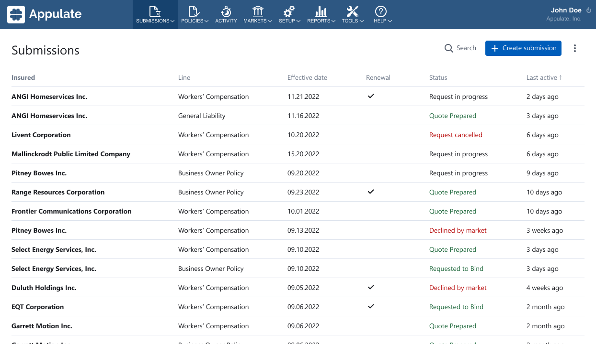
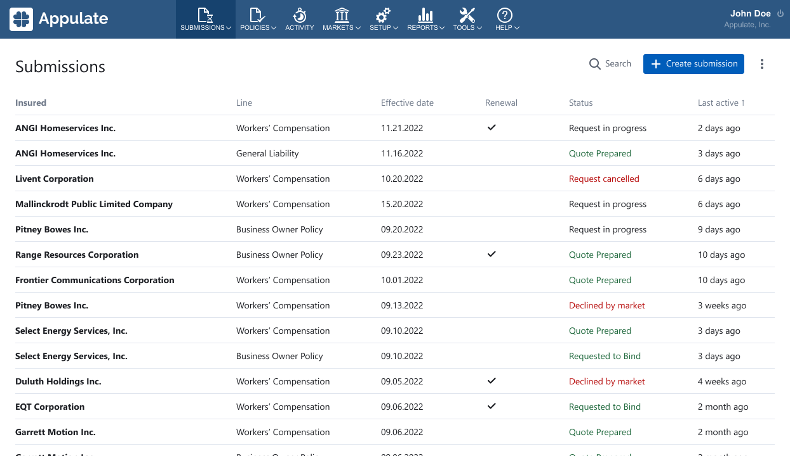

Appulate
Appulate это продукт для американского рынка страхования, в котором
агенты покупают страховки для своих клиентов.
Я переосмыслил воркфлоу агента, теперь он состоит из трех шагов:
- Создание страховки (Create submission)
- Запрос квоты (Request quote)
- Оформление полиса (Bind policy)
Старый воркфлоу был сложным, агенты часто терялись, не могли найти
информацию и понять, что делать дальше. Новый стал более линейным и
пошаговым.
Главная страница
Раньше на главной странице агента был список клиентов, которых он
страхует (Insured). В них были вложены страховки (Submissions). Из-за
такой иерархии сложно было быстро найти нужную страховку.
 Проведя исследование с аналитиками, мы выяснили, что обычно у клиентов
агента всего одна страховка. Поэтому я вынес страховки на главную, а
клиентов сделал их параметром.

Проведя исследование с аналитиками, мы выяснили, что обычно у клиентов
агента всего одна страховка. Поэтому я вынес страховки на главную, а
клиентов сделал их параметром.

Создание новой страховки
Из-за изменений на главной странице упростился процесс создания
страховки.
Раньше агент сперва добавлял клиента, затем автоматически запускался
шаг создания страховки. Агенты не могли понять как создать еще одну
страховку у того же клиента и где её искать после создания.
Теперь страховка создается в один шаг. Страницы клиента больше нет, а
данные с неё отображаются на странице страховки. Все страховки и кнопка
создания новой на виду на главной странице.
Мы с командой рассчитываем, что теперь агенты будут быстрее находить
страховки и уменьшиться процент отказов при её создании.
Запрос квоты
После создания страховки агент запрашивает квоту у маркетов (компании
продающие страховые полисы).
Квота это документ с условиями страховки и её стоимостью, если они
подойдут клиенту агента, то квота станет страховым полисом.
Раньше агент сперва выбирал маркетов. Их вопросы автоматически
объединялись в единую форму. После её заполнения агент запрашивал квоты
сразу у нескольких маркетов.
У такого подходы было несколько проблем, которые мы старались решить:
-
Формы получались гигантскими, с обратной зависимостью вопросов, со
сложной структурой и большой вложенностью.
-
Разработка алгоритма для объединения форм разных маркетов занимала
много времени у разработчиков.
После наблюдения за работой агентов, мы пришли к выводу, что лучше
сделать, чтобы агент запрошивал квоту у маркетов по очереди.
Плюсы нового подхода:
-
Агент быстрее получает первую квоту, так как формы стали меньше.
-
Дизайн форм стал проще, теперь их структура контролируется в ручную,
что позволяет правильно организовать последовательность вопросов,
сделать удобную структуру и избавиться от вложенности.
- Разработчики стали быстрее добавлять новые формы маркетов.